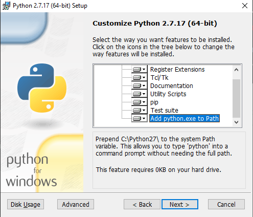

Guest Installation¶
Similarly to the installation of the host component described in Host Installation, the guest can be installed both automatically via a set of scripts or manually. A major difference in the installation is the OS of the guest component. While a similar approach to the host installation can be taken if Ubuntu is chosen as a guest platform, an installation of a Windows 10 guest requires some additional work. Similar to the host installation, it is recommended to check Configuration of installation options for any needed adjustments before starting one of the automated install scripts.
Windows 10 Guest¶
The first step in creating your virtual Windows 10 guest is creating the virtual machine. To do this, you will need to obtain a Windows 10 image. We recommend downloading an ISO-file from an official source.
Next, you need to set up the virtual machine. While this can be done via the graphical interface of the virt-manager, we recommend running the win10install.sh install script found in the install_tools folder
$ sudo ./win10install.sh path/to/isofile
or simply copying the command seen below:
$ virt-install --name windows-template \
--ram 4096 \
--vcpus sockets=1,cores=2,threads=1 \
--disk pool=fortrace-pool,bus=sata,size=40,format=qcow2 \
--cdrom /home/fortrace/Win10_1903_V1_German_x64.iso \
--network network=public \
--network network=private \
--graphics spice,listen=0.0.0.0 \
--noautoconsole \
-v
$ sudo chown [user] [path-to-pool]windows-template.qcow2
Either method would require you to adapt the –cdrom parameter with the correct path and name of your installation medium. You might also want to change –ram, disk space (size) or –vcpus depending on your available resources. When starting the virtual machine, make sure to name your primary user fortrace. Additionally, it is important not to set a password when first starting the guest component. Otherwise, fortrace will be unable to log into the default chosen user. If, for any reason the auto login does not work with your Windows 10 guest component, this link should guide you through the process of (re-)enabling auto login.
Windows installation - automated¶
While most of the installation of the Windows guest can be automated, a few steps have to be done manually.
First and foremost, fortrace has to be downloaded and moved or copied to your desktop. It can be found here.
Next, you simply have to run install.bat with admin privileges. It is located in the install_tools folder. This will install two .msi files located in the same folder.
The following steps are included in the install.bat and are only mentioned for transparency.
The first is Python 2.7 and can be downloaded here in case it is missing.
If you need to install pip in case the automatic installation skips it, download the get-pip.py script here and run the following command in your command line:
C:\Users\user\fortrace\Downloads> python get-pip.pyThe second msi file ist the Visual C++ Compiler for Python 2.7. The compiler can be downloaded directly from Microsoft’s web presence.
After all of the presetup is done, fortrace is installed using the following command:
C:\Users\user\fortrace\Desktop\fortrace> python setup.py installGenerally, this should be done by the executed pre_setup.py script.
The final step manipulates the Windows Task Scheduler to run startGuestAgent.bat, which in turn will start the guestAgent.py script, both located in guest_tools. This script manages the communication between your host and guest instances. This is handled by the following line in the pre_setup.py script:
prepCmd = "schtasks /create /sc ONLOGON /tn fortrace /tr %HOMEPATH%\Desktop\fortrace\guest_tools\startGuestAgent.bat /f" subprocess.call(prepCmd.split(), stdout=subprocess.PIPE)In case the command above is not executed or does not create the task as expected, please follow the instructions in the Windows manual instructions section below.
Next, you will want to install all applications used to generate traffic. Both Firefox and Thunderbird are the default mail and browsing applications used by fortrace.
Windows installation - manual¶
Your first step in a manual installation of a Windows guest template should also be to download fortrace from the repository and the folder to your desktop.
Next, you will need to download and install a few prerequisites before being able to install python packages and fortrace itself.
The first is Python 2.7 and can be found here. During installation, make sure Python is added to PATH and pip is installed alongside Python.
These options should be turned on by default. If needed, both options can be performed after the actual installation.
A useful, short guide on how to add Python to your PATH can be found on this website.
If you need to install pip after the fact, download the get-pip.py script here and run the following command in your command line:
C:\Users\user\fortrace\Downloads> python get-pip.py
Furthermore, you will need to install the Visual C++ Compiler for Python 2.7. The compiler can be downloaded directly from Microsoft’s web presence.
Next, you will want to install all applications used to generate traffic. Both Firefox and Thunderbird are the default mail and browsing applications used by fortrace. Finally, you will need to install the required python modules. If you have installed Python as recommended above, you will simply be able to use the pip install command to install the following packages:
C:\Users\user\fortrace\Desktop> pip install -U pywinauto==0.6.0
C:\Users\user\fortrace\Desktop> pip install -U pywin32
C:\Users\user\fortrace\Desktop> pip install -U setuptools
C:\Users\user\fortrace\Desktop> pip install -U selenium
C:\Users\user\fortrace\Desktop> pip install -U marionette_driver
C:\Users\user\fortrace\Desktop> pip install -U netifaces
C:\Users\user\fortrace\Desktop> pip install -U psutil
C:\Users\user\fortrace\Desktop> pip install -U netaddr
C:\Users\user\fortrace\Desktop> pip install -U enum34
C:\Users\user\fortrace\Desktop> pip install -U protobuf==2.5.0
C:\Users\user\fortrace\Desktop> pip install -U mozprofile
C:\Users\user\fortrace\Desktop> pip install -U mozrunner
Now you need to manipulate the Windows Task Scheduler to run startGuestAgent.bat, which in turn will start the guestAgent.py script, both located in guest_tools. This script manages the communication between your host and guest instances. The following screenshots will guide you through the process of creating the task.
- Start task scheduler.
- Select create task.
- Select a name for the task. As a precaution, tick the box to execute the task with highest privileges.
- Select the trigger tab, and add a new trigger (on log on, all users).
- Select the actions tab and add a new action by browsing to the fortrace folder located on your desktop. Select the startGuestAgent.bat file.
Alternatively, you can move a link of the startGuestAgent.bat script to the autostart folder located in C:/Users/fortrace/AppData/Roaming/Microsoft/Windows/Start Menu/Programs/Startup.
The only thing left to do to make this Windows guest template operational is to install fortrace.
C:\Users\user\fortrace\Desktop> python setup.py install
Ubuntu Guest¶
The first step in creating your virtual Ubuntu guest is creating the virtual machine. To do this, you will need to obtain a Ubuntu image. We recommend downloading an ISO-file from an official source.
Although we recommend Ubuntu 19.10, you can use other versions as well - the installation process should remain the same.
Next, you need to set up the virtual machine. While this can be done via the graphical interface of the virt-manager, we recommend running the ubuntu19.10install.sh install script found in the install_tools folder
$ sudo ./ubuntu19.10install.sh path/to/isofile
or simply copying the command seen below:
$ virt-install --name linux-template \
--ram 4096 \
--vcpus sockets=1,cores=2,threads=1 \
--disk pool=fortrace-pool,bus=sata,size=40,format=qcow2 \
--cdrom /home/fortrace/ubuntu-19.10-desktop-amd64.iso \
--network network=public \
--network network=private \
--graphics spice,listen=0.0.0.0 \
--noautoconsole \
-v
$ sudo chown [user] [path-to-pool]linux-template.qcow2
Either method would require you to adapt the –cdrom parameter with the correct path and name of your installation medium. You might also want to change –ram or –vcpus depending on your available resources. When starting the virtual machine, make sure to name your primary user fortrace. During your initial setup, you will be asked for your user credentials. On this screen, it is important to choose the option Log in automatically. This is required for fortrace, so no manual user inputs are needed on the guest side when synthesizing traffic. If your auto login does not work, this guide will help you activate it after setting up your host machine.
Once you are able to start the virtual machine and the OS has been installed and initialized, you should eject the installation medium.
Ubuntu installation - automated¶
The automated installation for a guest running Ubuntu is similar to the installation of the host machine described in Host Installation.
First and foremost, fortrace has to be downloaded and moved or copied to your desktop. It can be found here.
Next, you will want to install all applications used to generate traffic. Both Firefox and Thunderbird are the default mail and browsing applications used by fortrace.
After fortrace has been downloaded and your traffic generating application have been installed, simply navigate into install_tools and run linux_installation.sh and choose the option for the guest installation. You will be asked to enter your password as root privileges are required for parts of the installation. Do not execute the entire script as root (with sudo).
$ ./linux_installation.sh
Please choose if this installation is host (h) or guest (g) side installation:
Selection: g
...
This will install Python and then run the pre_setup.py with the vm parameter to start installing all necessary python modules. You can also start this script by hand if you choose to do so, although it would require a manual installation of Python beforehand.
$ sudo python pre_setup.py vm
This script also creates the ~/.config/autostart folder and places the script agent.desktop inside. This script ensures that guestAgent.py from the guest_tools folder is called on system boot to facilitate communication between guest and host.
After installing all necessary Python modules, you just have to install fortrace to complete the installation process. To do so, navigate into the main directory you copied to your desktop and run the following:
$ python setup.py install --user
Ubuntu installation - manual¶
First and foremost, fortrace has to be downloaded and moved or copied to your desktop. It can be found here.
Next, you will want to install all applications used to generate traffic. Both Firefox and Thunderbird are the default mail and browsing applications used by fortrace.
After fortrace has been downloaded and your traffic generating application have been installed, you need to install a few packages and Python modules. First, install the Python and Python-Pip packages.
$ sudo apt install python
$ sudo apt install python-pip
Make sure the default Python version is a variation of 2.7
$ python -V
If this command returns a Python version higher than 2.7, refer to Host Installation for a guide on how to change the default Python version.
Next, you will need to install the required Python modules. Simply use the pip install -U commands listed below.
$ pip install -U pywinauto==0.6.0
$ pip install -U pywin32
$ pip install -U setuptools
$ pip install -U selenium
$ pip install -U marionette_driver
$ pip install -U netifaces
$ pip install -U psutil
$ pip install -U netaddr
$ pip install -U enum34
$ pip install -U protobuf==2.5.0
$ pip install -U mozprofile
$ pip install -U mozrunner
It is possible, that netifaces will require you to install python-dev:
$ sudo apt install python-dev
$ pip install -U netiface
Additionally, Linux requires an additional package called LDTP as well as an enabled accessibility feature in Gnome to control and manage window actions:
$ wget http://download.freedesktop.org/ldtp/3.x/3.5.x/ldtp-3.5.0.tar.gz
$ pip install –user ldtp-3.5.0.tar.gz
$ sudo apt install python-gnome2 python-twisted-web2 python-pyatspi
$ gsettings set org.gnome.desktop.interface toolkit-accessibility true
Once you have installed all necessary modules, you need to make sure that guestAgent.py located in the directory guest_tools gets executed automatically when the template or one of its future clones boots. To accomplish this, make sure the directory ~/.config/autostart exists - you might have to create autostart manually.
$ cd ~/.config
$ mkdir autostart
Use an editor of your choice to create a file in this directory and name it agent.desktop (you can choose a different name), copy and then paste the following text in it:
[Desktop Entry]
Type=Application
Terminal=false
Exec=gnome-terminal -e 'bash -c "python ~/Desktop/fortrace/guest_tools/guestAgent.py; bash"'
Hidden=false
X-GNOME-Autostart-enabled=true
Name=Startup Script
Comment=
The last step of your presetup will be to install fortrace. Navigate into the main directory you copied to your desktop and run:
$ python setup.py install --user
Connecting the guest machines to the NFS server¶
On the Ubuntu guest, start by running the following 3 commands:
$ sudo apt update
$ sudo apt install nfs-common
$ sudo mkdir /mnt/remotenfs
This will install NFS and create a folder that will be used to mount the NFS server. You can choose a different location and name.
Next, edit your /etc/fstab file to include the following line:
[ip_address]:/var/nfsroot /mnt/remotenfs nfs rw,async,hard,intr,noexec 0 0
The ip address can be gathered from the service VM by running ip addr in a service VM shell. var/nfsroot and mnt/remotenfs need to be adapted to your choice of remote and local folder locations and names.
Finally, mount the filesystem:
$ sudo mount /mnt/remotenfs
On Windows 10, your installation will run differently. We recommend installing the service VM before installing the Windows guest component.
After installing the service VM, start your Windows template. Open your Control Panel and select ‘’Programs and Features**. Here, you will have the option to Turn Windows features on or off in the sidebar - click it, tick “Services for NFS” in the following window and click OK.
As a next step, you need to enable write permissions for this machine. To do this, you need to open regedit and find HKEY_LOCAL_MACHINESOFTWAREMicrosoftClientForNFSCurrentVersionDefault. Create two new DWORD components named AnonymousUid and AnonymousGid and assign the UID and GID values shared by the NFS system. Lastly, mount the filesystem by adjusting mountnfs.bat with the correct IP address and folder location. If you have already installed the service VM or do not mind running install.bat a second time, the mountfs.bat will be added to the Task Scheduler, mounting the filesystem at launch automatically.
This method can also be used to connect the NFS server to your host machine.
Creating backups or manual clones for guest templates¶
fortrace creates and disposes of clones of the prepared templates automatically, but you might want to create a backup of your templates manually. To do so, simply start virt-manager, right-click on the template and select clone.
While the method above works for both Windows and Ubuntu, you can create a Ubuntu backup without a graphical interface:
$ qemu-img create -f qcow2 -b /media/KVM-Images/ubuntu_template.qcow2 /media/KVM-Images/l-guest01.qcow2
$ virt-clone --connect qemu:///system \
--preserve-data `#Do not clone disk image`\
--original ubuntu_template \
--name l-guest01 \
--file /media/KVM-Images/l-guest01.qcow2